Danuartha • Penulis Artikel • 17 Agustus 2021
Pengenalan Dasar Javascript untuk Pemula

Javascript adalah bahasa pemrograman yang wajib kamu pelajari jika ingin mendalami dunia web development.
Saat ini javascript tidak hanya digunakan di sisi client (browser) saja. Javascript juga digunakan pada server, console, program desktop, mobile, IoT, game, dan lain-lain.
Pada artikel ini, kita akan belajar Javascript dari dasar. Mulai dari pengenalan Javascript, hingga membuat program pertama dengan Javascript.
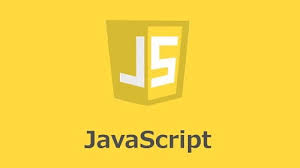
Apa itu Javascript?
JavaScript adalah bahasa pemrograman yang digunakan dalam pengembangan website agar lebih dinamis dan interaktif. Namun, seiring perkembangan zaman, javascript tidak hanya berjalan di atas browser saja. Javascript juga dapat digunakan pada sisi Server, Game, IoT, Desktop, dsb.
Javascript awalnya bernama Mocha, lalu berubah menjadi LiveScript saat browser Netscape Navigator 2.0 rilis versi beta (September 1995). Namun, setelah itu dinamai ulang menjadi Javascript.
Dari kesuksesan Javascript, Microsoft mengadopsi teknologi serupa. Microsoft membuat ‘Javascript’ versi mereka sendiri bernama JScript. Lalu di tanam pada Internet Explorer 3.0. Hal ini mengakibatkan ‘ perang browser’, karena JScript milik Microsoft berbeda dengan Javascript racikan Netscape. Akhirnya pada tahun 1996, Netscape mengirimkan standarisasi ECMA-262 ke Ecma International. Sehingga lahirlah standarisasi kode Javascript bernama ECMAScript atau ES. Saat ini ECMAScript sudah mencapai versi 8 (ES8).
Peralatan Untuk Belajar Javascript
Apa saja peralatan yang harus disiapkan untuk belajar Javascript?
1. Web Browser (Google Chrome, Firefox, Opera, dll)
2. Teks Editor (rekomendasi: VS Code)
Membuat Program Javascript Pertama
Silahkan buka teks editor, kemudian buat file beru bernama hello_world.html dan isi dengan kode berikut:
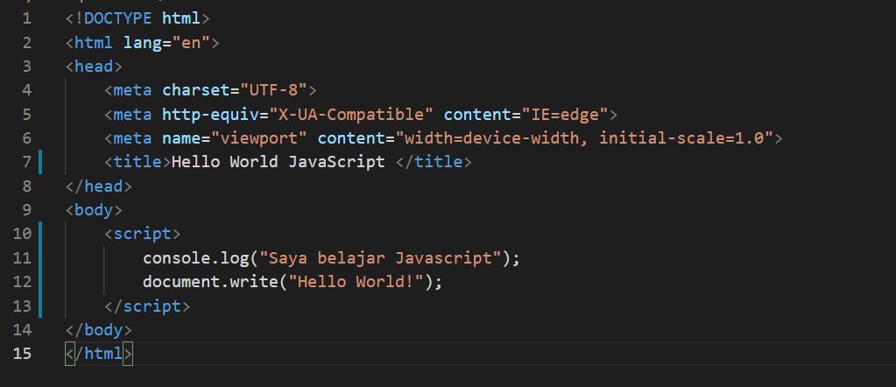
Silahkan disimpan dengan nama hello_world.html (ctrl + s), kemudian buka file tersebut dengan web browser.
Maka jika ditampilkan di browser hasilnya akan jadi seperti ini :

Tunggu dulu... bukankah kita tadi menulis perintah console.log("Saya belajar Javascript");
Lalu, mengapa tidak ditampilkan?
Karena perintah atau fungsi console.log() akan menampilkan pesan ke dalam console javascript. Sedangkan perintah document.write() berfungsi untuk menulis ke dokumen HTML, maka dia akan ditampilkan kesana.
Sekarang coba saja buka console javascript. Maka kita akan melihat pesan "Saya belajar Javascript" :
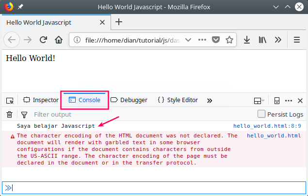
Bagaimana Cara Menulis Kode Javascript di HTML?
Pada contoh di atas, kita sudah menulis kode javascript di dalam HTML. Cara tersebut merupakan cara penulisan embeded (ditempel).
Masih ada beberapa cara lagi yang perlu kita ketahui:
1. Embed (Kode Javascript ditempel langsung pada HTML. Contoh: yang tadi)
2. Inline (kode Javascript ditulis pada atribut HTML)
3. Eksternal (Kode Javascript ditulis terpisah dengan file HTML)
Oke, mari kita lihat contoh berikut ini...
1. Penulisan kode Javascript dengan Embed
Pada cara ini, kita menggunakan tag <script>
untuk menempelkan (embed) kode Javascript pada HTML. Tag ini
dapat ditulis di dalam tag <head>
dan <body>.
Contoh :
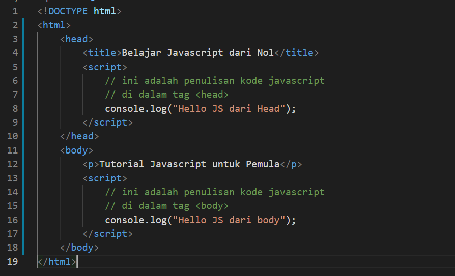Mana yang lebih bagus, ditulis di dalam <head>
atau <body> ?
Banyak yang merekomendasikan menuliskannya di dalam <body>,
karena akan membuat web di-load lebih cepat.
2. Penulisan kode Javascript dengan Inline
Pada cara ini, kita akan menulis kode javascript di dalam atribut HTML. Cara ini biasanya digunakan untuk memanggil suatu fungsi pada event tertentu. Misal: saat link diklik.
Contoh :
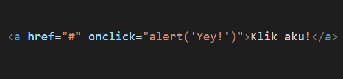atau bisa juga seperti ini :
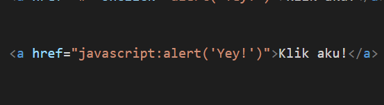Hasilnya :
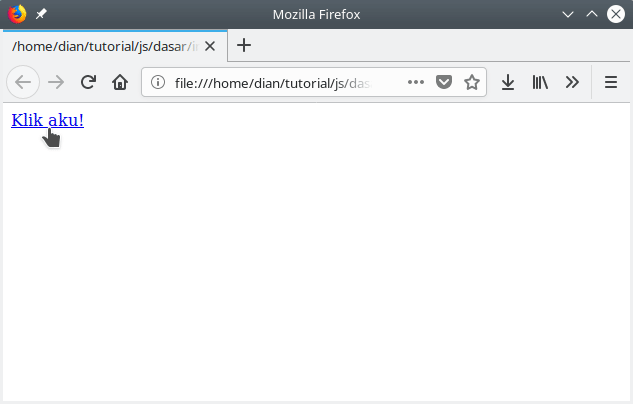Pada atribut onclick dan href kita menuliskan fungsi javascript di sana. Atribut on click merupakan atribut HTML untuk menyatakan fungsi yang akan dieksekusi saat elemen itu diklik.
Pada contoh di atas, kita menjalankan fungsi alert(). Fungsi ini merupakan fungsi untuk menampilkan dialog. Lalu pada atribut href, kita juga memanggil fungsi alert() dengan didahului javascript:
Atribut href sebenarnya digunakan untuk mengisi alamat link atau URL. Karena kita ingin memanggil kode javascript di sana, maka alamat link tersebut kita ubah menjadi javascript: lalu diikuti dengan fungsi yang akan dipanggil.
3. Penulisan kode Javascript dengan Eksternal
Pada cara ini, kita akan menulis kode javascript secara
terpisah dengan file HTML.
Cara ini biasanya digunakan pada proyek-proyek besar,
karena diyakini dengan cara ini dapat lebih mudah mengelola
kode project.
Mari kita lihat contohnya…
Kita buat dua file, yaitu: file index.html dan kode-program.js.
Isi dari file kode-program.js :
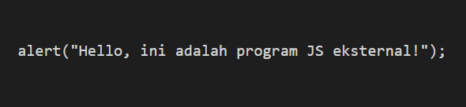Isi dari file index.html :
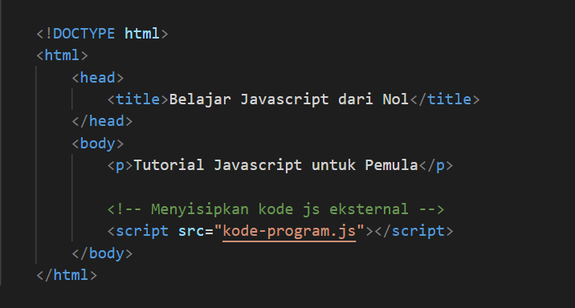Hasilnya :
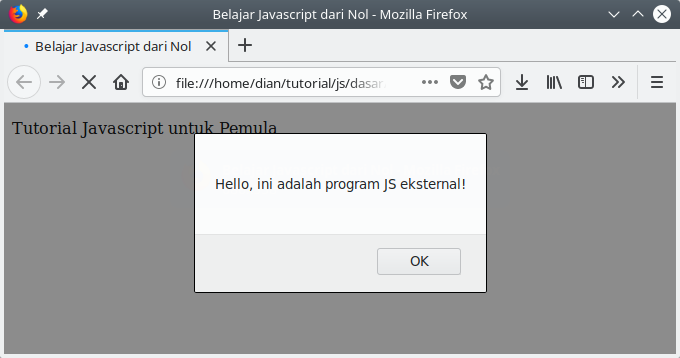Pada contoh di atas, kita menulis kode javascript terpisah
dengan kode HTML.
Lalu, pada kode HTML…
Kita menyisipkannya dengan memberikan atribut src pada tag <script>
.
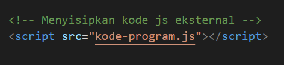
Maka, apapun yang ada di dalam file kode-program.js akan dapat dibaca dari file index.html.
Selamat 🎉
Kamu sudah mengenal javascript dan sudah membuat program pertama dengan Javascript.